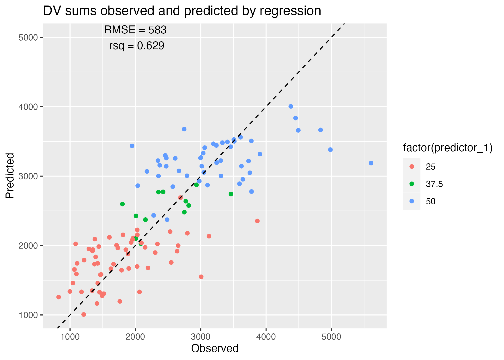

#install.packages("tidyverse")
library(tidyverse)
#install.packages("ggplot2")
library(ggplot2)
#install.packages("tidymodels")
library(tidymodels)
#install.packages("here")
library(here)
#install.packages("rsample")
library(rsample)Fitting Exercise Week 8
Task 1: load the data and visualize
The code chunk below loads the Mavoglurant_A2121_nmpk.csv dataset and provides the structure and summary of its variables:
#read in csv file
mavoglurant_data = read.csv(here("fitting-exercise", "Mavoglurant_A2121_nmpk.csv"))
#take a look at the structure
str(mavoglurant_data)'data.frame': 2678 obs. of 17 variables:
$ ID : int 793 793 793 793 793 793 793 793 793 793 ...
$ CMT : int 1 2 2 2 2 2 2 2 2 2 ...
$ EVID: int 1 0 0 0 0 0 0 0 0 0 ...
$ EVI2: int 1 0 0 0 0 0 0 0 0 0 ...
$ MDV : int 1 0 0 0 0 0 0 0 0 0 ...
$ DV : num 0 491 605 556 310 237 147 101 72.4 52.6 ...
$ LNDV: num 0 6.2 6.41 6.32 5.74 ...
$ AMT : num 25 0 0 0 0 0 0 0 0 0 ...
$ TIME: num 0 0.2 0.25 0.367 0.533 0.7 1.2 2.2 3.2 4.2 ...
$ DOSE: num 25 25 25 25 25 25 25 25 25 25 ...
$ OCC : int 1 1 1 1 1 1 1 1 1 1 ...
$ RATE: int 75 0 0 0 0 0 0 0 0 0 ...
$ AGE : int 42 42 42 42 42 42 42 42 42 42 ...
$ SEX : int 1 1 1 1 1 1 1 1 1 1 ...
$ RACE: int 2 2 2 2 2 2 2 2 2 2 ...
$ WT : num 94.3 94.3 94.3 94.3 94.3 94.3 94.3 94.3 94.3 94.3 ...
$ HT : num 1.77 1.77 1.77 1.77 1.77 ...#summary
summary(mavoglurant_data) ID CMT EVID EVI2
Min. :793.0 Min. :1.000 Min. :0.00000 Min. :0.0000
1st Qu.:832.0 1st Qu.:2.000 1st Qu.:0.00000 1st Qu.:0.0000
Median :860.0 Median :2.000 Median :0.00000 Median :0.0000
Mean :858.8 Mean :1.926 Mean :0.07394 Mean :0.1613
3rd Qu.:888.0 3rd Qu.:2.000 3rd Qu.:0.00000 3rd Qu.:0.0000
Max. :915.0 Max. :2.000 Max. :1.00000 Max. :4.0000
MDV DV LNDV AMT
Min. :0.00000 Min. : 0.00 Min. :0.000 Min. : 0.000
1st Qu.:0.00000 1st Qu.: 23.52 1st Qu.:3.158 1st Qu.: 0.000
Median :0.00000 Median : 74.20 Median :4.306 Median : 0.000
Mean :0.09373 Mean : 179.93 Mean :4.085 Mean : 2.763
3rd Qu.:0.00000 3rd Qu.: 283.00 3rd Qu.:5.645 3rd Qu.: 0.000
Max. :1.00000 Max. :1730.00 Max. :7.456 Max. :50.000
TIME DOSE OCC RATE
Min. : 0.000 Min. :25.00 Min. :1.000 Min. : 0.00
1st Qu.: 0.583 1st Qu.:25.00 1st Qu.:1.000 1st Qu.: 0.00
Median : 2.250 Median :37.50 Median :1.000 Median : 0.00
Mean : 5.851 Mean :37.37 Mean :1.378 Mean : 16.55
3rd Qu.: 6.363 3rd Qu.:50.00 3rd Qu.:2.000 3rd Qu.: 0.00
Max. :48.217 Max. :50.00 Max. :2.000 Max. :300.00
AGE SEX RACE WT
Min. :18.0 Min. :1.000 Min. : 1.000 Min. : 56.60
1st Qu.:26.0 1st Qu.:1.000 1st Qu.: 1.000 1st Qu.: 73.30
Median :31.0 Median :1.000 Median : 1.000 Median : 82.60
Mean :32.9 Mean :1.128 Mean : 7.415 Mean : 83.16
3rd Qu.:40.0 3rd Qu.:1.000 3rd Qu.: 2.000 3rd Qu.: 90.60
Max. :50.0 Max. :2.000 Max. :88.000 Max. :115.30
HT
Min. :1.520
1st Qu.:1.710
Median :1.780
Mean :1.762
3rd Qu.:1.820
Max. :1.930 There are 17 variables and 2678 observations; some variables, such as AGE, SEX, RACE, HT, and WT, are descriptors of each individual ID; that is, the values of these variables will be the same for every observation with the same ID value.
There are multiple observations per ID level, each with different values for variables like DV, LNDV, and TIME; this suggests that the data is comprised of multiple time-series, with observations taken from the same individuals at different points of time.
Similarly, it appears that participants recieved one of three different dosages of Mavoglurant, and the DV aover time after administration of each dose is given. These time series are visualized in Figure 1, with DV as the outcome and faceted by DOSE.
#generate time series figure
plot = ggplot() + geom_point(data = mavoglurant_data, aes(x = TIME, y = DV, group = ID, col = factor(DOSE))) + geom_line(data = mavoglurant_data, aes(x = TIME, y = DV, group = ID, col = factor(DOSE))) + facet_wrap(~ DOSE) +
scale_y_continuous(trans = "log")
plot# Save Figure
figure_file = here("fitting-exercise", "figures", "time_series.png")
ggsave(filename = figure_file, plot=plot) Clearly, there is quite a bit of heterogeneity in these time series, through each tends to trend down more-or-less exponentially (though it seems the rate of decay is decreasing with time.) As indicated here, it appears that some indiciduals received the drug more than once, indicated by having both entries with OCC = 1 and OCC = 2. We will only be considering one dataset for each individual, and we will thus be keeping only 1 adminsitration, that is, OCC = 1.
Task 2: Filtering for observations with OCC = 1 only
The following code chunk removes all observations where OCC = 2. In all fairness, I am not removing OCC = 2 observations overtly. Instead, I am ensuring that I only keep OCC = 1 observations. This way, if we were to update the dataset with more observations from participants who received the drug a third or, even, a fourth time, we would only be analyzing one standard dataset across all participants.
#filter dataframe for observations after first administration of mavoglurant only
mavoglurant_data = mavoglurant_data %>%
dplyr::filter(OCC == 1) # keep OCC = 1 observations
#note that I am trying to get into the habit of referencing a package each time I use a function derived from it, i.e dplyr::filter(). It's a challenge to remember to do so, but it will be worth it!Task 3: Isolating \(T_0\) observations and summing total DV for each participant
We would like to compute the total amount of drug (delivered?) for each participant by summing the DV values for each time series.
DV is a measurment of drug concentration (presumably, drug in system, or drug delivered?). Because we are not going to use some sophisticated way of integrating to find the total drug amount (which makes me think this is total amount administered, but could also mean total amount in the blood over time), and instead we are going to sum DV over time, I’d like to get a sense of how much the length of the time series vary. If they vary dramatically, we should consider this when we draw conclusions based on total integrated DV.
The code chunk below generates a boxplot to compare the lengths of time series collected for participants, stratified by the dosage received.
#list to store time series lengths by dose
series_lengths = list()
for(i in 1:length(levels(factor(mavoglurant_data$DOSE)))){
lengths = mavoglurant_data %>%
filter(DOSE == levels(factor(mavoglurant_data$DOSE))[i]) %>%
group_by(ID) %>%
count() %>%
pull(n)
series_lengths[[i]] = lengths
}
df = data.frame(lengths = c(series_lengths[[1]], series_lengths[[2]], series_lengths[[3]]),
dose = c(rep("25", length(series_lengths[[1]])), rep("37.5", length(series_lengths[[2]])), rep("50", length(series_lengths[[3]]))))
plot = ggplot() + geom_boxplot(data = df, aes(x = dose, y = lengths, fill = factor(dose))) #filling in boxplots looks cooler than outlining htem, in my opinion!
# Save Figure
figure_file = here("fitting-exercise", "figures", "time_series_lengthsbydose.png")
ggsave(filename = figure_file, plot=plot) From Figure 2, it appears that time series collected for participants given a dose of 37.5 tend to be longer than the time series collected for participants given the other two dosages. However, the mean difference is 3 time points. If these time points occur later in the time series, when DV is significantly lower than the initial DV (Figure 1), the difference in the sum of DV values may not be too extreme; however, if these were to occur earlier in the time series compared to the other two dosages, when concentrations are high, then we’ve a reason to worry. This applies to the distribution of points collected at different times after original dose delivery, as well - if time series are long but all observations were made at a significantly longer time elapsed from time 0, then we’d have an artificially low sum. We are not going to address this issue moving forward (i.e by fitting to some function and integrating the model function under the length of the series), but I think it is particularly important to have a more visual and intuitive understanding of the issue.
Perhaps I’ll revisit this after the model fitting portion of our exercise…
The code chunk below calculates the sum of DV values for each time series collected for each dosage and stores these sums in a data frame object named sums_nonzero; the “nonzero” nomer distinguishes the dataframe on the basis that all initial TIME == 0 measurements are disregarded and not included in the sum.
For completeness, we also create a data frame of all initial observations, named t0_obs.
We join these together to generate a dataframe of size 120 x 18, which we will call mavoglurant_data_cleaned. In our sums_nonzero dataframe, we have one observation per ID, where a row lists the sum total DV across all time series points (excluding TIME == 0) for an ID. We also have one observation per ID in our t0_obs dataframe, which contains the initial TIME == 0 DV observation and other defining characteristics of this first observation for each participant ID. We can use left_join(), with ID as our primary key, to join these dataframes.
# excluding observations with TIME == 0 and summing all DV per ID
sums_nonzero = mavoglurant_data %>%
filter(TIME != 0) %>%
summarize(y = sum(DV), .by = ID)
# including only TIME == 0
t0_obs = mavoglurant_data %>%
filter(TIME == 0)
# join the dfs
mavoglurant_data_cleaned = left_join(t0_obs, sums_nonzero, by = "ID")Task 4: Cleaning joined dataframe
Lastly, we want to remove unnecessary variables from the joined dataframe mavoglurant_data_cleaned and convert categorical variables to type factor.
The code chunk below selects the Y, DOSE, AGE, SEX, RACE, RATE, WT, and HT variables, and treats SEX and RACE as factors.
#finish cleaning df
mavoglurant_data_cleaned = mavoglurant_data_cleaned %>%
select(y, DOSE, RATE, AGE, SEX, RACE, WT, HT) %>%
mutate(SEX = factor(SEX), RACE = factor(RACE))Model Fitting: continuous outcomes
DOSE as a predictor of y
Here, we know that y is the sum of our DV values after TIME==0 for a time series. We also know that DV is related to drug concentration. So, we can already anticipate there will be some relationship between the initial DOSE and y.
The DOSE variable is categorical and the y variable is continuous, so I will try to visualize this anticipated relationship by plotting a boxplot of y for each DOSE.
# plot
plot = ggplot() + geom_boxplot(data = mavoglurant_data_cleaned, aes(x = factor(DOSE), y = y, fill = factor(DOSE))) + geom_point(data = mavoglurant_data_cleaned, aes(x = factor(DOSE), y = y)) + labs(x = "Dose", y = "DV at Time 0")
plotClearly, y appears to increase with DOSE. However, there is significant overlap between the points. While we can anticipate this trend is significant, we still have two goals for our model:
- Can we parameterize the dependence of
yonDOSEwith some GLM (we can use a linear model)? - How significant is this relationship (we can use ANOVA on our linear model)?
We would like to find a linear model to describe the relationship between y and DOSE, and we are fine to begin our fitting by looking for ordinary least squares. Thus, our model will take the form y ~ DOSE, will be linear with categorical predictor for continuous outcome, and we are fine with the lm method.
We can test whether the mean y predicted by DOSE is significantly different by dosage using ANOVA.
### fitting a linear model
# define recipe with recipes package
rec_y_DOSE <-
recipes::recipe(y ~ DOSE,
data = mavoglurant_data_cleaned)
# choose model with parsnip package
y_DOSE_reg =
parsnip::linear_reg() %>% #linear regression model
parsnip::set_engine("lm") %>% #with lm method
parsnip::set_mode("regression") #mode = regression, mode outcome is numeric
# we can turn this into a workflow with workflows package
y_DOSE_reg_WF =
workflows::workflow() %>% #defining workflow object
workflows::add_model(y_DOSE_reg) %>% #choosing the model for the workflow
workflows::add_recipe(rec_y_DOSE) #adding the recipe - which variables for outcome, predictor, any interactions...
# fitting the model with fit()
y_DOSE_reg_model = fit(y_DOSE_reg_WF, data = mavoglurant_data_cleaned)
table1 = y_DOSE_reg_model %>% tidy()
### Testing if the mean ys are significantly different
# ANOVA
anova_y_DOSE_reg = y_DOSE_reg_model %>% extract_fit_engine() %>% anova()
table2 = anova_y_DOSE_reg %>% tidy()
### saving table results
# save summary tables
summarytable_file = here("fitting-exercise", "tables", "y_DOSE_reg.rds")
saveRDS(table1, file = summarytable_file)
summarytable_file = here("fitting-exercise", "tables", "anova_y_DOSE_reg.rds")
saveRDS(table2, file = summarytable_file)| term | estimate | std.error | statistic | p.value |
|---|---|---|---|---|
| (Intercept) | 323.06249 | 199.048513 | 1.623034 | 0.1072508 |
| DOSE | 58.21289 | 5.193797 | 11.208155 | 0.0000000 |
The output of tidymodel’s fit() on our linear regression by lm model provides our estimated parameters (“estimate”, Table 1), as well as the standard error (\(\sigma / \sqrt{n}\)). Before we examine the results of our ANOVA, however, we want to take a closer look at the fit of othe linear model we fed into the analysis. Below, we use the yardstick package to determine the root mean squared error and correlation coefficient of the linear regression between y and DOSE.
# calculate r^2 and RMSE from y_DOSE_reg model
## make predictions based on real DOSE observations
predictions_y_DOSE_reg = data.frame(predictor = mavoglurant_data_cleaned$DOSE,
.pred = predict(y_DOSE_reg_model, new_data = mavoglurant_data_cleaned %>% select(-y)), #use regression model to make y predictions from existing DOSE observations
observation = mavoglurant_data_cleaned$y) #bind to observed y observations
## lets take a look
plot = ggplot() + geom_point(data = predictions_y_DOSE_reg, aes(x = predictor, y = observation, color = factor(predictor))) +
geom_point(data = predictions_y_DOSE_reg, aes(x = predictor, y = .pred)) +
geom_line(data = predictions_y_DOSE_reg, aes(x = predictor, y = .pred), linetype = "dashed") +
labs(x = "Dose", y = "DV sum", title = "Regression model prediction of DV sum by dose")
## now lets calculate our metrics
metrics = yardstick::metric_set(rmse, rsq)
table = metrics(predictions_y_DOSE_reg, truth = observation, estimate = .pred)
## add rmse and rsq to plot
plot = plot + annotate("text", y = 5000, x = 32.5, label = paste0("RMSE = ", round(table[1,3], 0), "\n rsq = ", round(table[2,3], 3)))
# saving outputs
summarytable_file = here("fitting-exercise", "tables", "metrics_y_DOSE_reg.rds")
saveRDS(table, file = summarytable_file)
figure_file = here("fitting-exercise", "figures", "metrics_y_DOSE_reg.png")
ggsave(filename = figure_file, plot=plot) | .metric | .estimator | .estimate |
|---|---|---|
| rmse | standard | 666.4617870 |
| rsq | standard | 0.5156446 |
Clearly, we can see that the linear regression captured some linear relationship between dose and the sum total DV, y. There is clearly quite a bit of variance among the observed values around the estimate predicted by our linear model for each dose (colored vs black points, Figure 3), and similarly, our model fit displays quite a high RMSE (666) and low \(r^2\) (0.516).
The ANOVA does reveal that the differences in estimates from the regression model are significant, with a p-value of 2.6931057^{-20}. Let’s see if we can capture a better model by utilizing more variables as predictors.
| term | df | sumsq | meansq | statistic | p.value |
|---|---|---|---|---|---|
| DOSE | 1 | 56743749 | 56743749.1 | 125.6227 | 0 |
| Residuals | 118 | 53300558 | 451699.6 | NA | NA |
DOSE, RATE, AGE, SEX, RACE, HT, and WT as predictors of y
We’ve demonstrated that dose correlates positively with the sum total DV y; we’ve also demonstrated that there is quite a bit of heterogeneity around the estimate predicted by DOSE alone. Here, we would like to discern whether a model utilizing DOSE, RATE, AGE,SEX,RACE,HT, andWTall as predictors ofy` will provide a better fitting model. This will ultimately raise the question of whether we are overfitting by introducing too many parameters, but let’s not get ahead of ourselves!
The questions addressed in this section are as follows:
- Can we parameterize the dependence of
yonDOSE,RATE,AGE,SEX,RACE,HT, andWTwith some GLM (we can use a linear model)? - How do the RMSE and \(r^2\) of this model compare to our previous
y ~ DOSEregression?
### fitting a linear model
# define recipe with recipes package
rec_y_all <-
recipes::recipe(y ~ DOSE + RATE + AGE + SEX + RACE + WT + HT,
data = mavoglurant_data_cleaned)
# choose model with parsnip package
y_all_reg =
parsnip::linear_reg() %>% #linear regression model
parsnip::set_engine("lm") %>% #with lm method
parsnip::set_mode("regression") #mode = regression, mode outcome is numeric
# we can turn this into a workflow with workflows package
y_all_reg_WF =
workflows::workflow() %>% #defining workflow object
workflows::add_model(y_all_reg) %>% #choosing the model for the workflow
workflows::add_recipe(rec_y_all) #adding the recipe - which variables for outcome, predictor, any interactions...
# fitting the model with fit()
y_all_reg_model = fit(y_all_reg_WF, data = mavoglurant_data_cleaned)
table1 = y_all_reg_model %>% tidy()
### saving table results
# save summary tables
summarytable_file = here("fitting-exercise", "tables", "y_all_reg.rds")
saveRDS(table1, file = summarytable_file)| term | estimate | std.error | statistic | p.value |
|---|---|---|---|---|
| (Intercept) | 3399.953281 | 1819.271104 | 1.8688547 | 0.0643032 |
| DOSE | 146.874595 | 50.861892 | 2.8877139 | 0.0046733 |
| RATE | -14.354042 | 8.359358 | -1.7171225 | 0.0887711 |
| AGE | 1.777301 | 7.798316 | 0.2279083 | 0.8201406 |
| SEX2 | -338.676786 | 215.335328 | -1.5727878 | 0.1186399 |
| RACE2 | 125.040505 | 128.703178 | 0.9715417 | 0.3334101 |
| RACE7 | -398.431716 | 444.324300 | -0.8967138 | 0.3718300 |
| RACE88 | -69.064910 | 242.717190 | -0.2845489 | 0.7765248 |
| WT | -23.703602 | 6.351282 | -3.7320972 | 0.0003023 |
| HT | -717.053335 | 1094.568090 | -0.6551016 | 0.5137700 |
Clearly, DOSE, RATE, and WT are significant predictors of the sum total DV (Table 4).
However, when we observe our metrics:
# calculate r^2 and RMSE from y_DOSE_reg model
## make predictions based on real DOSE observations
predictions_y_all_reg = data.frame(predictor_1= mavoglurant_data_cleaned$DOSE,
.pred = predict(y_all_reg_model, new_data = mavoglurant_data_cleaned %>% select(-y)), #use regression model to make y predictions from existing observations
observation = mavoglurant_data_cleaned$y) #bind to observed y observations
## lets take a look
plot = ggplot() + geom_point(data = predictions_y_all_reg, aes(x = observation, y = .pred, color = factor(predictor_1))) +
geom_abline(linetype = "dashed") +
labs(x = "Observed", y = "Predicted", title = "DV sums observed and predicted by regression")
## now lets calculate our metrics
metrics = yardstick::metric_set(rmse, rsq)
table = metrics(predictions_y_all_reg, truth = observation, estimate = .pred)
## add rmse and rsq to plot
plot = plot + annotate("text", y = 5000, x = 2000, label = paste0("RMSE = ", round(table[1,3], 0), "\n rsq = ", round(table[2,3], 3)))
# saving outputs
summarytable_file = here("fitting-exercise", "tables", "metrics_y_all_reg.rds")
saveRDS(table, file = summarytable_file)
figure_file = here("fitting-exercise", "figures", "metrics_y_all_reg.png")
ggsave(filename = figure_file, plot=plot) 
| .metric | .estimator | .estimate |
|---|---|---|
| rmse | standard | 583.0903868 |
| rsq | standard | 0.6292464 |
Table 5 reveals that a model utilizing all variables as predictors of total DV sums does a slightly better job at recapitulating our observed y values, explaining 63% of the variance as opposed to the 52% explained by DOSE alone. However, if we were to penalize for the number of predictors and parameters, I’m not sure we’d agree that this model is the better-fitting! Once again, this depends on our goal - do we wish to reproduce our observations with the greatest accuracy? If we were to sample smaller subsets of our data and refit, would we still be able to reproduce all of our results with the same accuracy, and how much variance would we observe in the estimated parameters of each iteration?
Model fitting: categorical outcome
Previously, we formulated two linear models to predict the continuous outcome of the sum total DV for each time series, which we called y, with either initial drug DOSE alone or all predictor variables as predictors. This led us to ask an interesting question: do we care the most about accuracy, precision, and/or biological meaning in our model?
Here, we would like to ask a similar question: can we accurately predict the sex of an individual based upon the dosage of the drug they recieved? If we fit a model with all of their other characteristic variables, will we see a greater fit, and will this greater fit be meaningful enough that we would opt for the more parameterized model?
Here, SEX is a categorical variable we intend to predict; as such, we can use a logistic model. We will be using the default threshold of 0.5 as a cutoff to categorize our participants as eitherSEX == 1, or “success” (so it’s probably women ;)), or SEX == 2, or failure.
Predicting SEX by DOSE
Here, we’d like to see how well we can fit a logistic model to SEX by the predictor DOSE; perhaps certain dosages are more frequently assigned to one sex than the other? SEX is a binary categorical variable, and DOSE is a categorical variable with more than two levels. We will thus use a logistic regression to classify observations into either SEX category, 0 or 1.
The logistic regression estimates 2 parameters to produce a steep sigmoidal probability of one category of a binary categorical variable and some continuous predictor ( or some probability of success based on categorical predictors). The two parameters produce a sigmoidal relationship by assuming the odds of success increase multiplicatively for some unit increase in the predictor (that is, the natural log of the odds function of success is linear). For myself and others, a wonderful resource explaining the inutition behind this can be found in this online chapter.
If the predictor is continuous, we’d see something along the lines (ha, pun intended) of Figure 5:
### fitting a linear model
# define recipe with recipes package
recipe <-
recipes::recipe(SEX ~ HT,
data = mavoglurant_data_cleaned)
# choose model with parsnip package
reg =
parsnip::logistic_reg() %>% #linear regression model
parsnip::set_engine("glm") %>% #with glm method - which we cant use lm for a logistic model becuase OLS-like statstics don't make much sense here!
parsnip::set_mode("classification") #mode = classification, mode outcome is categorical
# we can turn this into a workflow with workflows package
reg_WF =
workflows::workflow() %>% #defining workflow object
workflows::add_model(reg) %>% #choosing the model for the workflow
workflows::add_recipe(recipe) #adding the recipe - which variables for outcome, predictor, any interactions...
reg_model = fit(reg_WF, data = mavoglurant_data_cleaned)
table1 = reg_model %>% tidy()
###plot
plot = ggplot() + geom_point(data = mavoglurant_data_cleaned, aes(x = HT, y = (as.numeric(SEX))-1)) +
stat_function(fun = function(x) exp(table1$estimate[1] + table1$estimate[2]*x)/(1+exp(table1$estimate[1] + table1$estimate[2]*x))) +
labs(x = "HT", y = "probability of Sex 2", title = "Example Logistic Regression")
###save fig
figure_file = here("fitting-exercise", "figures", "logistic_example.png")
ggsave(filename = figure_file, plot=plot) Note that we can also perform a logistic regression utilizing a categorical predictor - and, here, we can treat DOSE as a categorical variable or a numeric variable. I will be treating it numerically, because increasing dosage can have biological significance which may be indicated by sexual dimorphism!
Here, we are preforming a logistic regression to predict the probability of belonging to SEX category 2 based on the variable DOSE. Our formula will be SEX ~ DOSE, we will use a logistic_reg() model with an glm “engine”, and the mode of our model is classification as the output variable is categorical.
### fitting a linear model
# define recipe with recipes package
recipe <-
recipes::recipe(SEX ~ DOSE,
data = mavoglurant_data_cleaned)
# choose model with parsnip package
reg =
parsnip::logistic_reg() %>% #linear regression model
parsnip::set_engine("glm") %>% #with glm method - which we cant use lm for a logistic model becuase OLS-like statstics don't make much sense here!
parsnip::set_mode("classification") #mode = classification, mode outcome is categorical
# we can turn this into a workflow with workflows package
reg_WF =
workflows::workflow() %>% #defining workflow object
workflows::add_model(reg) %>% #choosing the model for the workflow
workflows::add_recipe(recipe) #adding the recipe - which variables for outcome, predictor, any interactions...
reg_model = fit(reg_WF, data = mavoglurant_data_cleaned)
table1 = reg_model %>% tidy()
###plot
plot = ggplot() + geom_point(data = mavoglurant_data_cleaned, aes(x = DOSE, y = (as.numeric(SEX))-1, color = SEX), alpha = 0.25) +
stat_function(fun = function(x) exp(table1$estimate[1] + table1$estimate[2]*x)/(1+exp(table1$estimate[1] + table1$estimate[2]*x))) +
labs(x = "DOSE", y = "probability of Sex 2", title = "Logistic Regression of Sex 2 Prob by Dose")
### saving table results
# save summary tables
summarytable_file = here("fitting-exercise", "tables", "SEX_DOSE_reg.rds")
saveRDS(table1, file = summarytable_file)
###save fig
figure_file = here("fitting-exercise", "figures", "logistic_sex_dose.png")
ggsave(filename = figure_file, plot=plot) | term | estimate | std.error | statistic | p.value |
|---|---|---|---|---|
| (Intercept) | -0.7648181 | 0.8539475 | -0.8956266 | 0.3704522 |
| DOSE | -0.0317544 | 0.0243205 | -1.3056660 | 0.1916662 |
Evidently, DOSE is a pretty poor predictor (say that five times fast) of SEX (see p.values for parameter estimates, Table 6). This is certainly not helped by the potential that SEX category 1 is over-represented in the dataset (see opacity of points, Figure 6). (Perhaps mavolglurant is a drug used more by one sex than the other?)
# calculate r^2 and RMSE from y_DOSE_reg model
## make predictions based on real DOSE observations
predictions = data.frame(predictor = mavoglurant_data_cleaned$DOSE,
.pred = predict(reg_model, new_data = mavoglurant_data_cleaned %>% select(-SEX)), #use regression model to make SEX predictions from existing DOSE observations
observation = mavoglurant_data_cleaned$SEX) #bind to observed sex observations
#plot barplot
plot = predictions %>%
group_by(predictor) %>%
summarize(obs_succeses = sum(as.numeric(observation)), pred_successes = sum(as.numeric(.pred_class))) %>%
pivot_longer(cols = c("obs_succeses", "pred_successes"),
names_to = "data",
values_to = "SEX2_Count") %>%
ggplot(aes(x = as.factor(predictor), y = SEX2_Count, fill = data)) + geom_bar(stat = "identity", position = position_dodge()) + labs(x = "DOSE", y = "Count of Sex 2 participants")
## now lets calculate our metrics
### accuracy
acc = accuracy(predictions, truth = observation, estimate = .pred_class)
### ROC AUC
predictions = data.frame(predictor = mavoglurant_data_cleaned$DOSE,
predict(reg_model, new_data = mavoglurant_data_cleaned %>% select(-SEX), type = "prob"), #use regression model to make SEX predictions from existing DOSE observations, returns probabilities of sex categories (2 cols)
observation = mavoglurant_data_cleaned$SEX) #bind to observed sex observations
rocauc = roc_auc(predictions, truth = observation, .pred_1) #roc with probabiliy of sex 2 thresholds
plot2 = roc_curve(predictions, truth = observation, .pred_1) %>% #plot roc curve
autoplot() + annotate("text", x = 0.75, y = 0.25, label = paste0("AUC = ", round(rocauc$.estimate, 3)))
## adjust barplot with accuracy metrics
plot = plot + annotate("text", x = "50", y = 60, label = paste0("accuracy = ", round(acc$.estimate, 3)))
#save figures
figure_file = here("fitting-exercise", "figures", "metrics_sex_DOSE_reg.png")
ggsave(filename = figure_file, plot=plot)
figure_file = here("fitting-exercise", "figures", "roc_sex_DOSE_reg.png")
ggsave(filename = figure_file, plot=plot2) The accuracy is actually pretty high (Figure 7) at 0.867, though our p-value really isn’t.
Predicting SEX by DOSE, RATE, AGE, SEX, RACE, HT, WT, and y.
The code chunk below fits a logistic regression model to predict SEX by the predictors DOSE, RATE, AGE, SEX, RACE, HT, WT, and y.
### fitting a linear model
# define recipe with recipes package
recipe <-
recipes::recipe(SEX ~ DOSE + RATE + AGE + y + RACE + WT + HT,
data = mavoglurant_data_cleaned)
# choose model with parsnip package
reg =
parsnip::logistic_reg() %>% #linear regression model
parsnip::set_engine("glm") %>% #with glm method - which we cant use lm for a logistic model becuase OLS-like statstics don't make much sense here!
parsnip::set_mode("classification") #mode = classification, mode outcome is categorical
# we can turn this into a workflow with workflows package
reg_WF =
workflows::workflow() %>% #defining workflow object
workflows::add_model(reg) %>% #choosing the model for the workflow
workflows::add_recipe(recipe) #adding the recipe - which variables for outcome, predictor, any interactions...
reg_model = fit(reg_WF, data = mavoglurant_data_cleaned)
table1 = reg_model %>% tidy()
###plot
plot = ggplot() + geom_point(data = mavoglurant_data_cleaned, aes(x = HT, y = (as.numeric(SEX))-1, color = AGE, shape = RACE)) +
stat_function(fun = function(x) exp(table1$estimate[1] + table1$estimate[10]*x)/(1+exp(table1$estimate[1] + table1$estimate[10]*x))) +
labs(x = "HT", y = "probability of Sex 2", title = "Logistic Regression, Probability of Sex 2 by all descriptors")
### saving table results
# save summary tables
summarytable_file = here("fitting-exercise", "tables", "SEX_all_reg.rds")
saveRDS(table1, file = summarytable_file)
###save fig
figure_file = here("fitting-exercise", "figures", "logistic_sex_all.png")
ggsave(filename = figure_file, plot=plot) mavoglurant_data_cleaned dataframe. Point color indicates age, while point shape indicates race category. The regression line for continuous predictor height is plotted.| term | estimate | std.error | statistic | p.value |
|---|---|---|---|---|
| (Intercept) | 60.2826915 | 18.0502582 | 3.3397135 | 0.0008386 |
| DOSE | -0.8490976 | 191.9637237 | -0.0044232 | 0.9964708 |
| RATE | 0.1363655 | 31.9939454 | 0.0042622 | 0.9965992 |
| AGE | 0.0834182 | 0.0607202 | 1.3738127 | 0.1694998 |
| y | -0.0010377 | 0.0009642 | -1.0763124 | 0.2817876 |
| RACE2 | -1.9240578 | 1.3759139 | -1.3983854 | 0.1619974 |
| RACE7 | 0.1185532 | 3.8410314 | 0.0308649 | 0.9753773 |
| RACE88 | -1.4978163 | 2.1944584 | -0.6825449 | 0.4948945 |
| WT | -0.0626504 | 0.0794790 | -0.7882638 | 0.4305424 |
| HT | -33.1798562 | 11.0835782 | -2.9936051 | 0.0027570 |
The best predictors of of SEX appear to be HT, Race, AGE, and potentially y (Table 7).Dose, y, RACE==32 or 88, WT, and HT are negatively correlated with SEX==2. Biologically, if we consider women to be shorter than men on average, then maybe my choice of SEX == 2 as the “success” variable under the assumption that SEX 2 is women was fortuitous ;).
# calculate r^2 and RMSE from y_DOSE_reg model
## make predictions based on real DOSE observations
predictions = data.frame(predictor = mavoglurant_data_cleaned$HT,
.pred = predict(reg_model, new_data = mavoglurant_data_cleaned %>% select(-SEX)), #use regression model to make SEX predictions from existing DOSE observations
observation = mavoglurant_data_cleaned$SEX) #bind to observed sex observations
#plot barplot
observed_successes = predictions %>% select(predictor, observation) %>% filter(observation==2)
predicted_successes = predictions %>% select(predictor, .pred_class) %>% filter(.pred_class==2)
for_hist = data.frame(HT = c(observed_successes$predictor, predicted_successes$predictor),
count = c(rep("observed", nrow(observed_successes)), rep("predicted", nrow(predicted_successes))))
plot = for_hist %>%
ggplot() + geom_histogram(aes(x = HT, y = ..density.., color = count, fill = count), alpha = 0.25, position = "identity", bins = 20) +
geom_density(aes(x = HT, y=..density.., color = count, fill = count), position = "identity", alpha = 0.5) +
labs(x = "HT", y = "density of total SEX == 2 observations", title = "Comparison of classifications of SEX by Logistic regression model against predictor HT")
## now lets calculate our metrics
### accuracy
acc = accuracy(predictions, truth = observation, estimate = .pred_class)
### ROC AUC
predictions = data.frame(predictor = mavoglurant_data_cleaned$HT,
predict(reg_model, new_data = mavoglurant_data_cleaned %>% select(-SEX), type = "prob"), #use regression model to make SEX predictions from existing DOSE observations, returns probabilities of sex categories (2 cols)
observation = mavoglurant_data_cleaned$SEX) #bind to observed sex observations
rocauc = roc_auc(predictions, truth = observation, .pred_1) #roc with probabiliy of sex 2 thresholds
plot2 = roc_curve(predictions, truth = observation, .pred_1) %>% #plot roc curve
autoplot() + annotate("text", x = 0.75, y = 0.25, label = paste0("AUC = ", round(rocauc$.estimate, 3)))
## adjust barplot with accuracy metrics
plot = plot + annotate("text", x = 1.7, y = 13, label = paste0("accuracy = ", round(acc$.estimate, 3)))
#save figures
figure_file = here("fitting-exercise", "figures", "metrics_sex_all_reg.png")
ggsave(filename = figure_file, plot=plot)
figure_file = here("fitting-exercise", "figures", "roc_sex_all_reg.png")
ggsave(filename = figure_file, plot=plot2) 
Including more predictors improves the accuracy of the classification model to 94% (Figure 10), and the ROC-AUC performance to 0.98 (Figure 11). This model is certainly better at classification than the previous but, once again, fails to support or predict any biological indicator of SEX by the predictors included in the study and may suffer from fitting with too many unnecessary parameters. We did discover, however, the significance of the contributions of different factors to the prediction of SEX, with HT being the most significant predictor (Table 7).
Model Improvement Assignment
The code chunk below defines the value of a seed, but does not yet set the seed.
rngseed = 1234 #define the number of our seedAs a last step in processing, we know that the RACE factor variable has some bizarre entries (7 or 88), and we are not particularly curious about asking questions regarding this variable now. So, we are going to remove it from the dataset in the code chunk below. I have also kept the RATE variable until this point, but will be removing it for this part of the assessment as well.
mavoglurant_data_cleaned = mavoglurant_data_cleaned %>%
select(-c(RATE,RACE)) #remove variables RATE and RACE from the cleaned datasetNow, our dataset mavoglurant_data_cleaned consist of 120 observations of 6 variables: y, DOSE, AGE, SEX, WT, and HT.
In this section, we will be splitting our data into two subsets: a training set and a test set. The training set will be used to fit our models, while the test set will be used to observe whether the fitted model precisely captures the behavior of the data - that is, how well does it perform when predicting the test data? With so few samples, we would ideally perform cross-validation and estimate model performance on unseen data (separate the dat into k staggered subsets, and run through k epochs of training the model on k-1 subsets and testing on the kth subset each epoch.) But, for the sake of learning, we are not going to do that here.
We will be randomly splitting our data 75% into the training set and 25% into the testing set below using the package rsample below:
set.seed(rngseed)
#split the dataset randomly into two sets
banana_split = initial_split(mavoglurant_data_cleaned, prop = 3/4) #prop refers to the proportion in the training set - 75%
# create dataframes for the two sets
training = training(banana_split)
testing = testing(banana_split)Model Fit Assessment
Here, we fit two linear models to the continuous outcome, y (as a reminder, y is the sum of DV values for a time series). The first utilises DOSE as a predictor, which we anticipate to have some correlation with the total sum of drug concentration measurments over time; the second model utilizes all predictors. Root Mean Squared Error is the metric used to optimize the model. We compare the fit of each model against the fit of a null model, predicting the mean of the observations without predictor variables.
Fitting the models and comparing RMSE metric
The following code chunk utilizes the tidymodels framework to fit a linear regression model (method = lm) with DOSE as a predictor of y:
### fitting a linear model
# define recipe with recipes package
rec_y_DOSE <-
recipes::recipe(y ~ DOSE,
data = training)
# choose model with parsnip package
y_DOSE_reg =
parsnip::linear_reg() %>% #linear regression model
parsnip::set_engine("lm") %>% #with lm method
parsnip::set_mode("regression") #mode = regression, mode outcome is numeric
# we can turn this into a workflow with workflows package
y_DOSE_reg_WF =
workflows::workflow() %>% #defining workflow object
workflows::add_model(y_DOSE_reg) %>% #choosing the model for the workflow
workflows::add_recipe(rec_y_DOSE) #adding the recipe - which variables for outcome, predictor, any interactions...
# fitting the model with fit()
train_y_DOSE_reg_model = fit(y_DOSE_reg_WF, data = training)
table1 = y_DOSE_reg_model %>% tidy()
### saving table results
# save summary tables
summarytable_file = here("fitting-exercise", "tables", "y_DOSE_reg_training.rds")
saveRDS(table1, file = summarytable_file)| term | estimate | std.error | statistic | p.value |
|---|---|---|---|---|
| (Intercept) | 323.06249 | 199.048513 | 1.623034 | 0.1072508 |
| DOSE | 58.21289 | 5.193797 | 11.208155 | 0.0000000 |
The output of tidymodel’s fit() on our linear regression by lm model provides our estimated parameters (“estimate”, ?@tbl-y-dose-reg_training), as well as the standard error (\(\sigma / \sqrt{n}\)). Below, we use the yardstick package to determine the root mean squared error and correlation coefficient of the linear regression between y and DOSE.
# calculate r^2 and RMSE from y_DOSE_reg model
## make predictions based on real DOSE observations
predictions_y_DOSE_reg_train = data.frame(predictor = training$DOSE,
.pred = predict(train_y_DOSE_reg_model, new_data = training %>% select(-y)), #use regression model to make y predictions from existing DOSE observations
observation = training$y) #bind to observed y observations
## lets take a look
plot = ggplot() + geom_point(data = predictions_y_DOSE_reg_train, aes(x = predictor, y = observation, color = factor(predictor))) +
geom_point(data = predictions_y_DOSE_reg_train, aes(x = predictor, y = .pred)) +
geom_line(data = predictions_y_DOSE_reg_train, aes(x = predictor, y = .pred), linetype = "dashed") +
labs(x = "Dose", y = "DV sum", title = "Regression model prediction of DV sum by dose")
## now lets calculate our metrics
metrics = yardstick::metric_set(rmse, rsq)
table = metrics(predictions_y_DOSE_reg_train, truth = observation, estimate = .pred)
## add rmse and rsq to plot
plot = plot + annotate("text", y = 4500, x = 32.5, label = paste0("RMSE = ", round(table[1,3], 0), "\n rsq = ", round(table[2,3], 3)))
# saving outputs
summarytable_file = here("fitting-exercise", "tables", "metrics_y_DOSE_reg_training.rds")
saveRDS(table, file = summarytable_file)
figure_file = here("fitting-exercise", "figures", "metrics_y_DOSE_reg_training.png")
ggsave(filename = figure_file, plot=plot) | .metric | .estimator | .estimate |
|---|---|---|
| rmse | standard | 702.8077893 |
| rsq | standard | 0.4507963 |
The following code chunk utilizes the tidymodels framework to fit a multiple linear regression model (method = lm) with all variables as a predictor of y:
### fitting a linear model
# define recipe with recipes package
rec_y_multiple <-
recipes::recipe(y ~ .,
data = training)
# choose model with parsnip package
y_multiple_reg =
parsnip::linear_reg() %>% #linear regression model
parsnip::set_engine("lm") %>% #with lm method
parsnip::set_mode("regression") #mode = regression, mode outcome is numeric
# we can turn this into a workflow with workflows package
y_multiple_reg_WF =
workflows::workflow() %>% #defining workflow object
workflows::add_model(y_multiple_reg) %>% #choosing the model for the workflow
workflows::add_recipe(rec_y_multiple) #adding the recipe - which variables for outcome, predictor, any interactions...
# fitting the model with fit()
train_y_multiple_reg_model = fit(y_multiple_reg_WF, data = training)
table1 = train_y_multiple_reg_model %>% tidy()
### saving table results
# save summary tables
summarytable_file = here("fitting-exercise", "tables", "y_multiple_reg_training.rds")
saveRDS(table1, file = summarytable_file)| term | estimate | std.error | statistic | p.value |
|---|---|---|---|---|
| (Intercept) | 4396.7716067 | 2169.637335 | 2.0265007 | 0.0458860 |
| DOSE | 55.3445105 | 5.830979 | 9.4914605 | 0.0000000 |
| AGE | -0.4174341 | 9.502942 | -0.0439268 | 0.9650670 |
| SEX2 | -568.9967188 | 285.444290 | -1.9933722 | 0.0494662 |
| WT | -22.6398760 | 7.649873 | -2.9595100 | 0.0040029 |
| HT | -1129.6696482 | 1358.399761 | -0.8316180 | 0.4079825 |
# calculate r^2 and RMSE from y_DOSE_reg model
## make predictions based on real DOSE observations
predictions_y_multiple_reg_train = data.frame(predictor_1= training$DOSE,
.pred = predict(train_y_multiple_reg_model, new_data = training %>% select(-y)), #use regression model to make y predictions from existing observations
observation = training$y) #bind to observed y observations
## lets take a look
plot = ggplot() + geom_point(data = predictions_y_multiple_reg_train, aes(x = observation, y = .pred, color = factor(predictor_1))) +
geom_abline(linetype = "dashed") +
labs(x = "Observed", y = "Predicted", title = "DV sums observed and predicted by regression")
## now lets calculate our metrics
metrics = yardstick::metric_set(rmse, rsq)
table = metrics(predictions_y_multiple_reg_train, truth = observation, estimate = .pred)
## add rmse and rsq to plot
plot = plot + annotate("text", y = 5000, x = 2000, label = paste0("RMSE = ", round(table[1,3], 0), "\n rsq = ", round(table[2,3], 3)))
# saving outputs
summarytable_file = here("fitting-exercise", "tables", "metrics_y_multiple_reg_training.rds")
saveRDS(table, file = summarytable_file)
figure_file = here("fitting-exercise", "figures", "metrics_y_multiple_reg_training.png")
ggsave(filename = figure_file, plot=plot) | .metric | .estimator | .estimate |
|---|---|---|
| rmse | standard | 627.4407539 |
| rsq | standard | 0.5622706 |
We compare the RMSE of the above two regression models to the RMSE of a null model predicting the mean y for each observation without considering DOSE.
#null model
null_y_reg = null_model() %>%
set_engine("parsnip") %>%
set_mode("regression") %>%
translate()
null_model = fit(null_y_reg, formula = y ~ 1, data = training)
# calculate r^2 and RMSE from y_DOSE_reg model
## make predictions based on real DOSE observations
predictions_null_model = data.frame(predictor = training$DOSE,
.pred = predict(null_model, new_data = training %>% select(-y)), #use regression model to make y predictions from existing DOSE observations
observation = training$y) #bind to observed y observations
## lets take a look
plot = ggplot() + geom_point(data = predictions_null_model, aes(x = predictor, y = observation, color = factor(predictor))) +
geom_point(data = predictions_y_DOSE_reg, aes(x = predictor, y = .pred)) +
geom_line(data = predictions_y_DOSE_reg, aes(x = predictor, y = .pred), linetype = "dashed") +
labs(x = "Dose", y = "DV sum", title = "Null model prediction of DV sum, y")
## now lets calculate our metrics
metrics = yardstick::metric_set(rmse)
table = metrics(predictions_null_model, truth = observation, estimate = .pred)
## add rmse and rsq to plot
plot = plot + annotate("text", y = 4500, x = 32.5, label = paste0("RMSE = ", round(table[1,3], 0)))
# saving outputs
summarytable_file = here("fitting-exercise", "tables", "metrics_null_model.rds")
saveRDS(table, file = summarytable_file)
figure_file = here("fitting-exercise", "figures", "metrics_null_model.png")
ggsave(filename = figure_file, plot=plot) | .metric | .estimator | .estimate |
|---|---|---|
| rmse | standard | 948.3526 |
Comparing the RMSE values reported in Table 9, Table 11, and ?@tbl-metrics-null-model, we can see that the model with the smallest mean roots squared error is the multiple regression model. However, we can also observe that the \(R^2\) value is greater for the single regression model with DOSE as a predictor, which should be taken into consideration when choosing whether the model with a greater number of parameters is truly the “better” model, and not simply the model with the greatest (over?) fit.
Assessing the model performance in a more rigorous way - against unseen data - can improve our understanding of the precision with which the model captures the behavior of the outcome variable based on the predictors. One way to do so is cross-validation.
Cross -Validation of Three Possible Models
In this section, we conduct a 10-fold cross-validation of each model against the training dataset according to the workflow suggest in the Introduction to TidyModels.
The package rsample is used here to create the resampling object - the folds of our data, or indices of random subsets, which will be used in the analysis and assessment of the models.
set.seed(rngseed) #we are resampling randomly, and should set seed for reproducibility
#here, we define the cross-validation folds from our training data
folds = rsample::vfold_cv(training, v = 10) #we would like to define 10 foldsWe would like to define two workflow() objects to bundle the two linear model - formula specifications.
####### workflow for single regression of y by dose ########
# choose model with parsnip package
y_DOSE_reg =
parsnip::linear_reg() %>% #linear regression model
parsnip::set_engine("lm") %>% #with lm method
parsnip::set_mode("regression") #mode = regression, mode outcome is numeric
# we can turn this into a workflow with workflows package
y_DOSE_reg_WF =
workflows::workflow() %>% #defining workflow object
workflows::add_model(y_DOSE_reg) %>% #choosing the model for the workflow
workflows::add_formula(y ~ DOSE) %>%
fit(data = training)
##########################################################################
###### workflow for multiple regression of y by all predictors #######
# choose model with parsnip package
y_multiple_reg =
parsnip::linear_reg() %>% #linear regression model
parsnip::set_engine("lm") %>% #with lm method
parsnip::set_mode("regression") #mode = regression, mode outcome is numeric
# we can turn this into a workflow with workflows package
y_multiple_reg_WF =
workflows::workflow() %>% #defining workflow object
workflows::add_model(y_multiple_reg) %>% #choosing the model for the workflow
workflows::add_formula(y ~ .) %>%
fit(data = training)set.seed(rngseed)
# CV single regression, y ~ DOSE
train_y_dose_rs = y_DOSE_reg_WF %>%
tune::fit_resamples(folds)
train_y_dose_CV_metrics = tune::collect_metrics(train_y_dose_rs) # extract metrics
# CV multiple regression, y ~ all
train_y_multiple_rs = y_multiple_reg_WF %>%
tune::fit_resamples(folds)
train_y_multiple_CV_metrics = tune::collect_metrics(train_y_multiple_rs) # extrac metrics
## CV on null mdoel doesnt make sense, of course, because the mean of the observations will stay the same. I am simply going to re-fit the null model here to keep the RMSE output in one place :)
# refit for null model
null_y_reg = null_model() %>% #fit null model
set_engine("parsnip") %>%
set_mode("regression") %>%
translate()
null_model_metrics = fit(null_y_reg, formula = y ~ 1, data = training) %>% #extract RMSE
predict(new_data = training) %>% #make predictions based on training data
select(.pred) %>% # isolate predicted values
bind_cols(training$y) %>% # bind predictions to training data observations
rename(y = "...2") %>% #rename column containing observations
rmse(truth = y, estimate = .pred) #calculate
#create table with CV output for each model
table1 = cbind("Predictor" = rep(c("DOSE", "multiple"), each = 2), rbind(train_y_dose_CV_metrics, train_y_multiple_CV_metrics)) #table comparing CV of linear regression models
table2 = null_model_metrics
# saving outputs
summarytable_file = here("fitting-exercise", "tables", "metrics_CV_models_training.rds")
saveRDS(table1, file = summarytable_file)
summarytable_file = here("fitting-exercise", "tables", "metrics_null_model_CV.rds")
saveRDS(table2, file = summarytable_file)| Predictor | .metric | .estimator | mean | n | std_err | .config |
|---|---|---|---|---|---|---|
| DOSE | rmse | standard | 690.5397679 | 10 | 67.4950937 | Preprocessor1_Model1 |
| DOSE | rsq | standard | 0.5117853 | 10 | 0.0592077 | Preprocessor1_Model1 |
| multiple | rmse | standard | 645.6909159 | 10 | 64.8192708 | Preprocessor1_Model1 |
| multiple | rsq | standard | 0.5729141 | 10 | 0.0685670 | Preprocessor1_Model1 |
| .metric | .estimator | .estimate |
|---|---|---|
| rmse | standard | 948.3526 |
The mean RMSE of the linear regression model with DOSE as a single predictor has actually improved from 702 to 690, though it is still outperformed by the multiple linear regression model, with a mean RMSE of 645. Here, we also see that the \(R^2\) value of the multiple regression model has improved and also demonstrates a greater fit of the model than the single regression model (though only slightly).